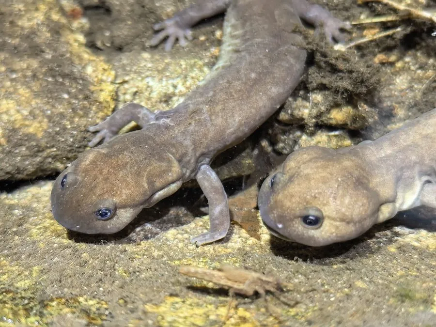

两栖动物 · 动物界
商城肥鲵 Pachyhynobius shangchengensis

中国大别山区特有的小型水栖蝾螈，体形肥壮、尾侧扁，栖于海拔数百米的山溪石缝，分布区极窄，为中国二级保护动物。
- 分类
- 门脊索动物门纲两栖纲目有尾目科小鲵科属肥鲵属
- 栖息环境
- 海拔 300–800 米、水质清澈低温、石块密布的山溪与石缝
- 地理分布
- 中国河南商城、安徽金寨等大别山区溪流
- 保护级别
- IUCN 易危（VU）；中国国家二级保护动物
物种志
商城肥鲵体长 12–18 厘米，体形肥壮呈圆柱状，头部扁平，吻部圆钝，眼小，唇褶明显；体侧有 12–14 条肋沟，皮肤光滑湿润，体色多为灰褐、黄褐或暗橄榄色，背部散布不规则的深色斑点，腹部浅灰黄。四肢短小，前肢四趾、后肢五趾，尾侧扁、基部宽厚，适于在水中摆动。
它们是中国大别山区的特有种，仅分布于河南商城、安徽金寨一带海拔 300–800 米的山溪中，栖息于水流清澈、石块密布、水温较低的溪段，白天藏在石缝与落叶堆下，夜间捕食水生昆虫幼虫、虾类、螺与小形鱼类。它们终生水栖，用皮肤与口咽腔呼吸，对水温和水质变化非常敏感。每年 3–5 月繁殖，雌鲵在石下产卵，卵粒成串附着，幼体具外鳃，需一至两年完成变态。由于分布区狭窄、溪流被拦截与旅游开发，其种群易受威胁。
形态与习性
- 体长约 12–18 cm
- 食性水生昆虫幼虫、虾类、螺与小形鱼类
- 繁殖3–5 月产卵，卵成串附着石下，幼体一至两年变态
- 栖息海拔约 300–800 m 的山溪
- 形态特征体肥壮、尾侧扁、体侧有 12–14 条肋沟
- 呼吸方式终生水栖，以皮肤与口咽腔呼吸
- 分布范围仅见于大别山区少数溪流，分布区极窄
趣味知识
- 商城肥鲵只在大别山区的几条溪流里生活，出了这片山就找不到。
- 它终生不离水，靠皮肤和口腔黏膜呼吸，水质一差就会消失。
- 它的幼体长着外鳃，要在溪水里待上一两年才完成变态。